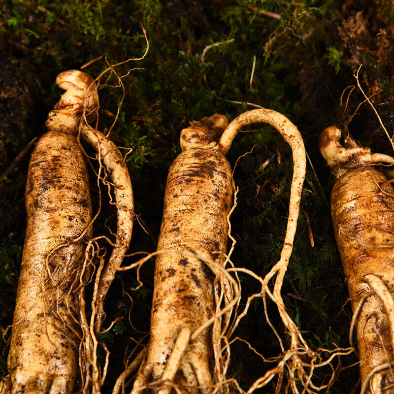

吉参1号

品种名称：吉参1号 品种简要说明 ： “吉参1号”是高产、优质人参新品种. 1、品质特性：该品种根部人参总皂含量6．0947％，总糖含量32．6308％，氨基酸含量108．499微克／毫克。 2、产量水平：该品种经多次产比、区试及生产试验证明，平均单产比现生产用种提高16．51～20．82％，优质参率比对照提高17．67％。每平方米产量可达3．07～4．99公斤。优质参率达90．17％。 3、一般农艺性状：吉参1号单根重大、主根长，具边条参特点。六年生鲜参平均单根重98．32克，主根长10．57厘米，根粗3．27厘米，根全长40．77厘米。地上部株型合理，茎高适中、茎杆粗壮，叶片较宽。种子千粒重43．5克，株均种子重7．2克。 4、适宜推广地区：主要适于吉林、辽宁、黑龙江三省的人参种植地区。 5、栽培技术要点：选择土壤肥力中上、PH5．5～7．0、理化性状较好的新林土或农田土进行整地、作床。采用点播育苗，播种密度5×5厘米，移植行、株距20×10厘米，移植时可略加整型下须。全生育期透光率20～25％，土壤含水量35～50％，在土壤肥力较差的土壤上可进行追肥，以每平方米有效氮、磷、钾27．6～34．8克为益。同时加强田间管理、综合防病，保证稳产高产。 选育单位： 中国农业科学院特产研究所 审定情况： 1998年通过吉林省农作物品种审定委员会审定。
|
品种搜索
中国医药学已有数千年的历史，是中国人民长期同疾病作斗争的
极为丰富的经验总结，对于中华民族的繁荣昌盛有着巨大的贡献。一般传统中药材讲究地道药材，是指在一特定自然条件、生态环境的地域内所产的药材，因生产较为集中，
栽培技术、采收 加工也都有一定的讲究，以致较同种药材在其他地区所产者品质佳、疗效好